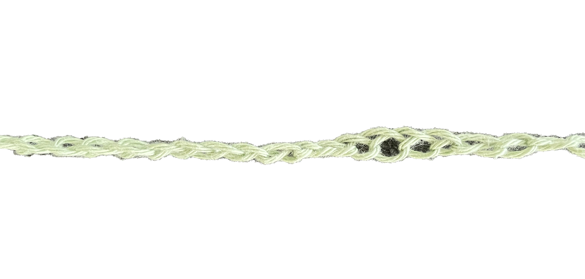
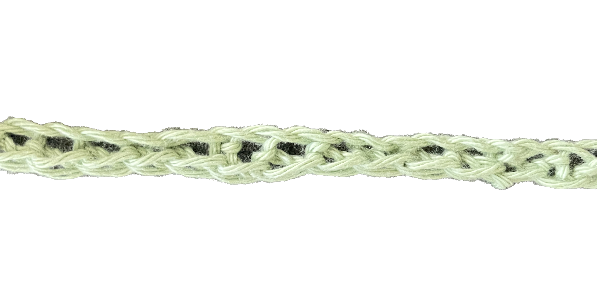
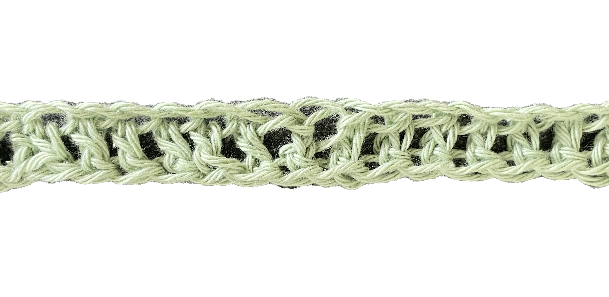

Hæklemønstre
Mulighederne er uendelige, når det kommer til hæklesting. At mestre forskellige hæklesting åbner op for en verden af kreativitet og giver dig frihed til at skabe smukke teksturer og mønstre. Lad os tage et nærmere kig på nogle af de mest grundlæggende hæklesting.
De forskellige masker
Luftmasker (Chain Stitch - ch):
Luftmasker er starten på alle projekter. De indikerer længden eller højden på dit projekt. De fungerer altså som fundamentet for de fleste hækleprojekter. De danner en løs kæde af masker og giver dig mulighed for at opbygge højde og struktur i dit arbejde. Luftmasker bruges også til at skabe mellemrum mellem de andre masker.

Se video her
Fastmasker (Single Crochet - sc):
Fastmasker er simple og alsidige. De bruges ofte til at opnå tætte og ensartede teksturer i dine projekter. Dette er masken du skal bruge, hvis du fx starter med en karkludsopskrift (se her). Denne maske er nyttig i alt fra tæpper til tøjdesign.

Se video her
Stangmasker (Double Crochet - dc):
Stangmasker er nogle af de højeste masker i hækling og giver dig mulighed for at arbejde hurtigt og dække store områder. De bruges ofte til projekter, der kræver en luftig og åben struktur, som for eksempel tæpper og sjaler.

Se video her
Mulighederne for at kombinere disse hæklesting er uendelige, og du kan skabe utallige smukke designs ved at blande og matche dem i dine projekter.
Husk, at øvelse gør mester, så tag dig tid til at øve dig på de forskellige hæklesting og eksperimentér med at skabe dine egne unikke mønstre. Snart vil du have en bred vifte af færdigheder til at bringe dine kreative visioner til live gennem hækling.